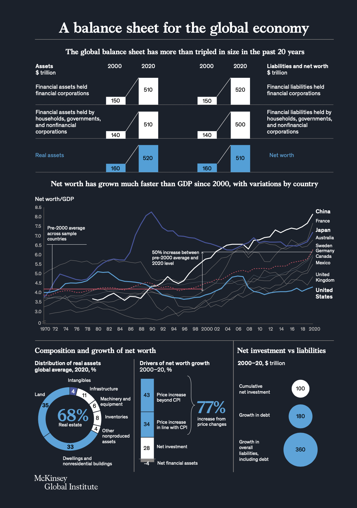
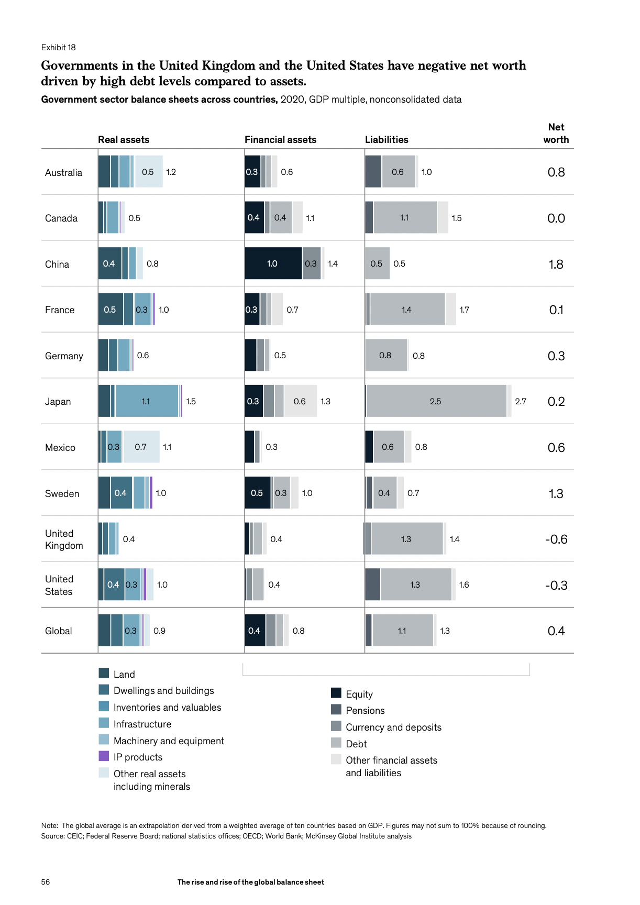
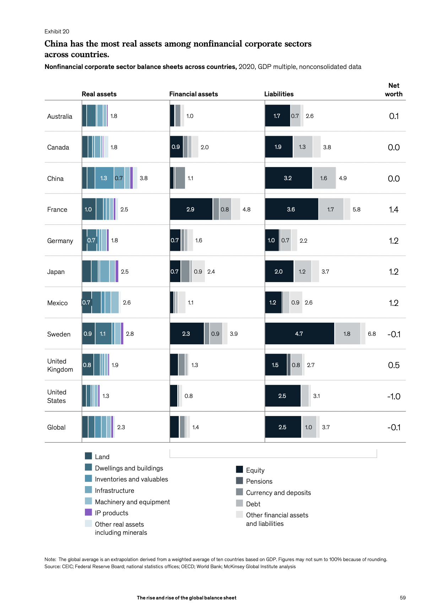
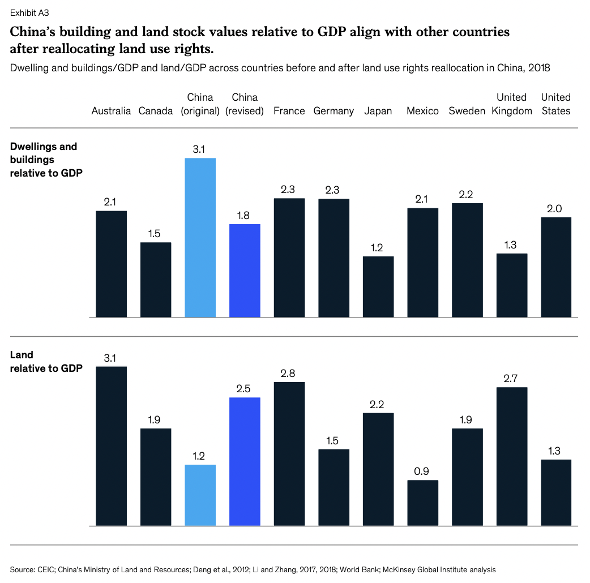
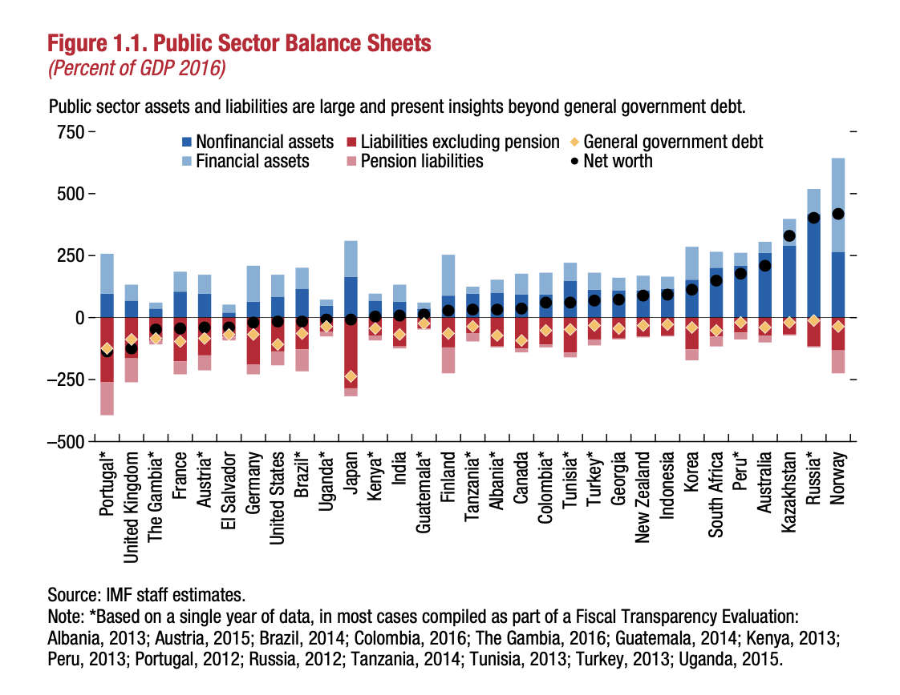

McKinsey, in its “The rise and rise of the global balance sheet,” provides land value estimates for 10 countries (Australia, Canada, China, France, Germany, Japan, Mexico, Sweden, UK and the US) and extrapolates that for the world.
1 Estimate
Their estimate for global land value is 35% of USD 520 trillion, i.e. USD 182 trillion. Global GDP in 2020 was about USD 85 trillion. So their estimate for global land value is a little more than 2 times global GDP.
1.1 Global land value (and other assets)

1.2 Land (and other assets) held by households

1.3 Land (and other assets) held by the government

1.4 Land (and other assets) held by the non-financial corporate sector

I’ve left out the financial sector from this post because it’s negligible for them.
2 Methodology
They use data from OECD, the national statistics offices for most countries and the Federal Reserve for the US. Some relevant excerpts for the methodologies used:
2.1 Japan, Australia, Germany, France, United Kingdom
— Japan, Australia, and Germany, the value of land underlying structures is based directly on the quantity of land multiplied by estimated market prices. In France and the United Kingdom, a residual approach is followed, where the total value of real estate is estimated and then the cost of the structure is subtracted. In the United States, the Federal Reserve and Bureau of Economic Analysis (BEA) do not publish separate estimates for land. The BEA cautions against forming a specific land stock value using the residual approach, because data on real estate stock are estimated separately from the value of structure replacement cost. In such a case, the final value of land could potentially be inaccurate due to source discrepancies. For more on how we calculated land values for the United States, see “United States: Splitting real estate totals into land, dwellings, buildings, and infrastructure,” below.
2.2 United States
For the United States balance sheet data, we leveraged the Federal Reserve Board’s Z.1 accounts.[196] They treat real estate as a nonfinancial asset, including land and structures (dwellings, buildings, and infrastructure).
To gain more detail, we first estimated the value of land based on guidance and inputs from several papers.197 We separately estimate, and then combine, private land, government land, and farmland.
— Private land: The Federal Reserve reported real estate stock data as a total of private land and structures as well as structures excluding land. The value of private land was estimated as the difference between the real estate value and the value of private structures.
— Government land: Larson (2015) calculates the share of total land owned by governments. We applied this estimate to our private land value estimates to reach a value for government land.
— Farmland: The US Department of Agriculture provided an estimate of total farmland, which we adjusted to nominal prices by applying a GDP chain-type price index. 198
Structures were then estimated as the difference between published real estate values and estimated land figures. To distribute total structures across dwellings, nonresidential buildings, and infrastructure, we used splits implied by the OECD’s published figures for the United States by sector.
[Footnotes:]
[196] “Financial accounts of the United States – Z.1,” Federal Reserve Board, 2021, federalreserve.gov.
[197] See William Larson, New estimates of value of land of the United States, Bureau of Economic Analysis, US Department of Commerce, April 2015, bea.gov; and Joseph B. Nichols, Stephen D. Oliner, and Michael R. Mulhall, Commercial and residential land prices across the United States, Federal Reserve Board, February 2010, federalreserve.gov.
2.3 China
Broadly, three land types need to be considered in valuing China’s land stock: urban land, agricultural and rural land owned by rural cooperatives, and land use rights. Land stock reported directly in China’s national accounts represents urban land owned by the government that has not been leased but does not appear to include the other two categories.
Urban land is a government-owned asset and is directly reported along with fixed assets and other balance sheet items described above. Urban land value is based on the total estimate of urban land reserves, for which the right of use has not been yet granted or sold. It is estimated based on the value of new land designated for construction adjusted by a factor of three.[188]
Agricultural and rural land, which are owned by rural cooperatives in China, are not directly reported in official national balance sheet data. Li and Zhang (2017) provide estimates for this form of land for the period 2007–11 based on the present value of the net output of agriculture, forestry, animal husbandry, and fishery, and reflecting a 4 percent discount rate and 40 percent rental rate.[189] We leveraged this approach to extend figures for agricultural and rural land beyond 2011 via statistics on agricultural output from IHS Markit.
[188] Yang Li, Xiaojing Zhang, and Xin Chang, China’s national balance sheet 2018, China Social Sciences Press, November 2018.
[189] Yang Li and Xiaojing Zhang, China’s national balance sheet: Theories, methods, and risk assessments, Springer, 2017.
Land use rights are owned by the household sector and are also not directly reported in official national balance sheet data. Land use rights, granted for decades-long periods by the Chinese government under a leasehold system, constitute a significant portion of privately owned property values in China. [190] We estimated land use rights in 2009 based on a survey by the Chinese Ministry of Land and Resources and then reallocated that total from dwellings to land in the household sector. The share of land use rights from structures was projected forward from 2010 to 2020 and backward from 2008 to 2000 using land and construction price indexes and implied net fixed capital formation in structures.[191]
Prior to the land use rights adjustment, both dwellings including buildings and land were outliers. Dwellings including buildings was 3.1 times GDP, while in other countries it ranged from 1.2 to 2.3 times GDP. Land accounted for significantly lower value than in most other countries apart from Mexico and the United States. After reallocating the value of land use rights from structures into land, both figures for China were closer to the typical range of values observed in other countries (Exhibit A3).
[Footnotes:]
[190] “Special investigation by the Ministry of Land and Resources reveals the ratio of land and house prices to real estate projects,” Chinese Ministry of Land and Resources, Central Government Portal, July 2009, gov.cn. Land use rights as a percentage of property price was available only for 2009; percentages before and after 2009 were estimated by adjusting using the land price index for 2004–11 and the construction price index from 2012 onward. The Ministry of Land and Resources has since become the Ministry of Natural Resources of the People’s Republic of China.
[191] For the real land price index from 2004–11, see Yongheng Deng, Joseph Gyourko, and Jing Wu, Land and housing price measurement in China, National Bureau of Economic Research, working paper number 18403, September 2012, nber.org. The construction price index is calculated via construction sector gross output from IHS Markit. For the 2004–11 period, the real land prices index adjusted for the consumer price index was used to adjust the 2009 implied value of land use rights. For the period 2012–20, the construction price index was used after adjusting for net fixed capital formation, which additionally contributed to the change in values for the non-land proportion of the property value. For the 2000–03 period, values were based on annual growth of land prices in the 2004–11 period.
[…]

2.4 Methodology for government assets
— Government accounting varies in robustness by country, which may result in undervaluation of public assets.[183]
[Footnotes:]
[183] Most governments use cash accounting rather than accrual accounting, and as a result balance sheet assets are based on statistical estimates. For further information, see Ian Ball and Gary Pflugrath, “Government accounting: Making Enron look good,” World Economics Journal, March 2012, Volume 13, Number 1.
In IMF’s Fiscal Monitor, they published “Managing Public Wealth,” in October 2018, where they estimate public (government-owned) wealth at “USD 101 trillion, or 219 percent of GDP”, for the 31 countries they studied and the net worth to be well above “well above 100 percent of GDP.”

This shows that McKinsey’s estimate, which puts government net worth well below 100% of GDP, at about 40% of GDP for the world, is quite conservative.